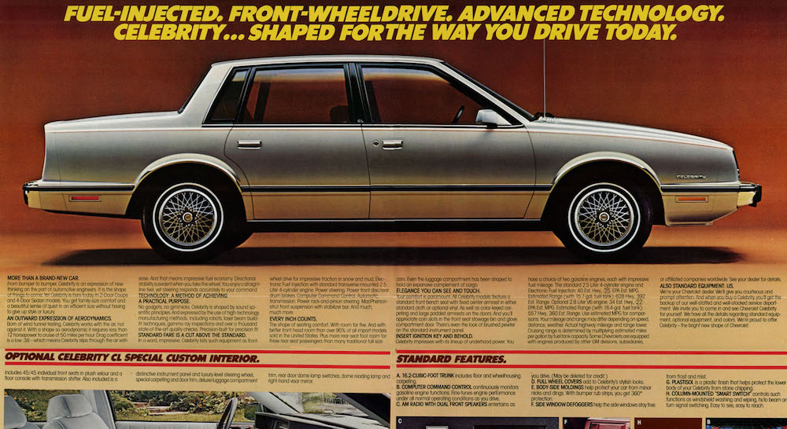

Looking for an excuse to build a Single Page Application in Angular with a Golang API I took inspiration from northwestskater and started compiling a collection of the skateparks I've been to.
Eventually I would like to build out some kind of search for a personal project as well... but that is far into the future.
Always looking to add another park so check back soon!
Curious about the sites name? Well back in the glory days of High School our first skate transportation vehicle was a 1989 Chevrolet Celebrity. Hence we started joking about one day starting a company called "Celebrity Skateboards."

Which culminated in the release of "Celebrity Skate Video"